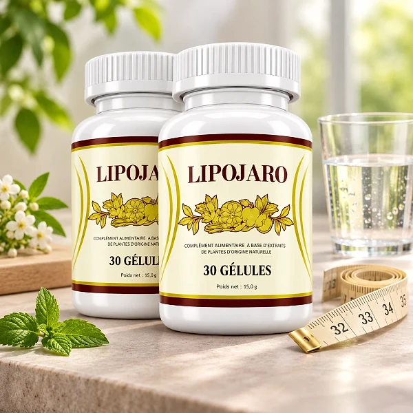
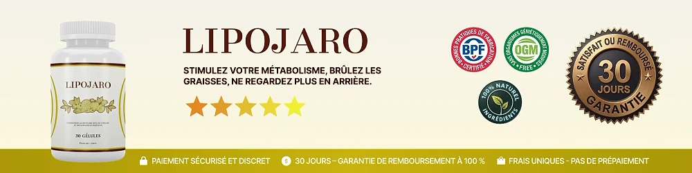

Qu’est-ce que LipoJaro et comment agit-il ?
LipoJaro est un complément alimentaire en gélules présenté par le site officiel comme un soutien à la gestion naturelle du poids et au métabolisme, à raison d’une seule gélule par jour. L’étiquette le décrit comme un « complément alimentaire avec du chrome et des substances végétales ».
Chaque flacon contient 30 gélules, soit environ un mois d’utilisation selon la posologie indiquée sur l’étiquette et sur la page de vente.
La formule réunit onze ingrédients : le chrome, l’extrait de thé vert, le vinaigre de cidre de pomme, la berbérine, le gingembre, la cannelle, l’orange amère, le piment de Cayenne (Capsicum annuum), le lilas des Indes (Lagerstroemia speciosa), le ginseng coréen et le resvératrol.
Comment agit-il ? Selon le site officiel, l’association du thé vert, du piment de Cayenne et de l’orange amère contribue à l’équilibre énergétique de l’organisme, tandis que le vinaigre de cidre, la berbérine et la cannelle sont présentés comme favorisant la satiété et l’équilibre après les repas. Le gingembre est associé au confort digestif, et le chrome au métabolisme des glucides.
La marque met en avant plusieurs objectifs : soutenir le métabolisme énergétique, aider à réduire les fringales entre les repas, apporter de l’énergie pour la journée et favoriser le confort digestif. Il s’agit de la présentation du fabricant, et non de résultats garantis.
D’après l’étiquette, LipoJaro est distribué dans l’Union européenne par Digistore24 MSLW Limited, à Dublin, avec une adresse de retour aux Pays-Bas.
Il faut rappeler que LipoJaro est un complément alimentaire : il ne remplace pas une alimentation variée et équilibrée ni un mode de vie sain, et il n’est pas destiné à diagnostiquer, traiter ou guérir une maladie. La gestion du poids dépend aussi de l’alimentation, de l’activité physique et du sommeil. Les résultats peuvent varier d’une personne à l’autre.
LipoJaro – Ingrédients
L’étiquette de LipoJaro indique la quantité de chaque ingrédient par gélule. Les doses sont identiques sur la page de vente, ce qui permet de savoir exactement ce que l’on prend chaque jour. Voici la composition publiée sur le flacon et sur le site officiel :
Chrome, picolinate de chrome (100 µg, 250 % des VNR) : présenté par la marque comme un soutien au métabolisme des glucides.
Extrait de feuille de thé vert (154 mg) et vinaigre de cidre de pomme (150 mg).
Berbérine HCl (85 mg) et racine de gingembre (50 mg).
Écorce de cannelle, orange amère et Capsicum annuum (20 mg chacun).
Lilas des Indes et ginseng coréen (5 mg chacun).
Resvératrol (1 mg), issu d’un extrait de racine de Polygonum cuspidatum.
Les autres composants sont la gélule végétale (hypromellose), la cellulose microcristalline et des antiagglomérants (sels de magnésium d’acides gras et dioxyde de silicium). Aucune VNR n’a été établie pour les extraits de plantes, qui font partie de la formule sans dose de référence officielle.
LipoJaro – Effets secondaires
Le site officiel ne publie pas de liste d’effets secondaires. LipoJaro associe des plantes et des nutriments courants, mais, comme pour tout complément alimentaire, la tolérance varie d’une personne à l’autre, et l’étiquette contient plusieurs précautions importantes.
Le produit ne doit pas être utilisé par les personnes de moins de 18 ans ni par les femmes enceintes ou allaitantes. L’étiquette recommande de consulter un médecin avant utilisation, en particulier en cas de prise de médicaments, de problème médical ou de surveillance médicale.
Un avertissement concerne les personnes diabétiques ou sujettes à l’hypoglycémie : selon l’étiquette, elles ne doivent utiliser LipoJaro que sous le contrôle d’un médecin, car le chrome peut augmenter la sensibilité à l’insuline et affecter le taux de glucose sanguin.
La formule contient aussi du thé vert, du piment de Cayenne et de l’orange amère, des ingrédients que certaines personnes sensibles préfèrent éviter. Ne dépassez pas la dose recommandée et n’utilisez pas un flacon dont le sceau de sécurité est endommagé ou manquant. En cas de gêne ou de réaction inhabituelle, arrêtez la prise et demandez conseil à un professionnel de santé, en lui montrant l’étiquette du produit.
LipoJaro – Posologie
La posologie est la même sur l’étiquette et sur la page de vente : les adultes prennent une (1) gélule par jour. Le site officiel conseille de la prendre 5 minutes avant le petit-déjeuner, avec un verre d’eau.
Un flacon de 30 gélules couvre donc environ un mois d’utilisation. La politique de remboursement de la marque recommande d’utiliser le produit pendant au moins trois mois pour évaluer son effet sur l’organisme.
La régularité compte davantage que la quantité. Un complément alimentaire agit de façon progressive, et LipoJaro est présenté comme un geste quotidien qui accompagne une hygiène de vie équilibrée, et non comme une solution rapide. Les résultats peuvent varier selon les personnes.
Pour en tirer le meilleur parti, il est utile de l’associer à une alimentation équilibrée, à une activité physique régulière, à une bonne hydratation et à un sommeil suffisant. L’étiquette rappelle que les compléments alimentaires ne doivent pas se substituer à un régime varié et équilibré ni à un mode de vie sain.
Ne dépassez jamais la dose recommandée. Conservez le flacon dans un endroit frais et sec, à une température inférieure à 30 °C, et hors de portée des jeunes enfants. La date de consommation de préférence figure sous le flacon.
LipoJaro – Remboursement
LipoJaro bénéficie d’une garantie satisfait ou remboursé de 30 jours, d’après le site officiel. Si le produit ne vous convient pas, vous pouvez demander le remboursement de votre achat selon les conditions publiées par la marque.
Délai : la politique de remboursement indique que les 30 jours commencent à la date du paiement de votre commande, visible dans l’e-mail de confirmation.
Première étape : écrivez à l’équipe d’assistance à l’adresse contact@vital-roots.site, en indiquant « Refund Request » dans l’objet pour que votre demande soit traitée en priorité.
Deuxième étape : renvoyez tous les flacons, vides ou non, ouverts ou non, avec une note indiquant votre nom complet, votre adresse e-mail et, si possible, votre numéro de commande. Les frais du retour restent à votre charge. Vérifiez l’adresse de retour indiquée par le service client, car le site et l’étiquette n’affichent pas la même.
Troisième étape : le remboursement est traité après réception du colis, généralement dans un délai de 5 à 10 jours, et vous êtes informé par e-mail.
La page de contact mentionne aussi un numéro de téléphone. La politique complète est disponible sur le site officiel, et il est utile de la lire avant de commander, car les conditions peuvent évoluer avec le temps.
LipoJaro – Où l’acheter ?
LipoJaro se commande sur son site officiel, lipo-jaro.online, et le paiement passe par Digistore24, la plateforme utilisée par la marque. C’est par ce site que les informations sur le produit, l’étiquette et la garantie sont publiées.
Des flacons proposés par des revendeurs inconnus peuvent sembler identiques, mais rien ne permet de vérifier leur origine ni la façon dont ils ont été conservés. Pour un complément alimentaire, cela pose une vraie question de qualité et de sécurité, et un achat hors du site officiel risque de ne pas être couvert par la garantie de 30 jours.
Voilà pourquoi la majorité des acheteurs commandent LipoJaro directement à la source. Le site officiel donne accès au produit authentique, au service client et à la garantie complète, avec des informations à jour sur la formule.
Avant de commander, prenez quelques minutes pour lire l’étiquette, la politique de remboursement et la page de contact publiées par la marque. Au moment de payer, assurez-vous d’être bien sur le site officiel de LipoJaro pour éviter toute contrefaçon.
Pour être sûr d’obtenir le produit authentique, la plupart des utilisateurs choisissent de passer par le site officiel.
LipoJaro est-il une arnaque ?
Au vu du site officiel et de l’étiquette, LipoJaro ne semble pas être une arnaque. C’est un véritable complément alimentaire, vendu par l’intermédiaire de Digistore24, une plateforme de paiement reconnue, et pensé pour accompagner le métabolisme et la gestion du poids.
L’étiquette présente un tableau nutritionnel clair, avec la dose de chacun des onze ingrédients, ainsi que des avertissements précis, notamment pour les personnes diabétiques.
Le flacon mentionne le distributeur dans l’Union européenne, Digistore24 MSLW Limited à Dublin, une adresse d’assistance et une adresse de retour, et le site publie une politique de remboursement détaillée, une politique de livraison et une page de contact.
Restez toutefois attentif à quelques points. Les pages du site ne donnent pas toutes la même adresse de retour, et la page de vente promet des bénéfices larges, comme moins de fringales ou des ballonnements, qui ne sont pas des résultats garantis. Fiez-vous à l’étiquette et gardez des attentes réalistes.
Chaque commande est couverte par une garantie satisfait ou remboursé de 30 jours.
Pour les adultes qui cherchent un complément quotidien simple pour accompagner une alimentation équilibrée et une activité régulière, LipoJaro peut être une option à considérer, commandée de préférence sur le site officiel et après avis médical si vous suivez un traitement.
Pour vérifier les détails du produit ou sa disponibilité actuelle, le site officiel de LipoJaro reste l’option la plus sûre.

Vérifier la disponibilité sur le site officiel
